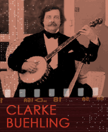

In additional to solo and group singing accompanied by the performers themselves on instruments such as the banjo and bones (yes, real bones that were played against one another to produce loud clacking rhythms, although some performers used wood), blackface minstrel performances featured dancing, riddles and conundrums, and parodies of popular stage works and topical events. The music included dialect, comic, and nonsense songs, as well as musical parodies. Sentimental songs were common. For example, Stephen Foster's "My Old Kentucky Home, Good Night!" (1853) and "Old Black Joe" (1860) sounded plantation themes, while other sentimental songs were less slave-oriented.
Listen to two examples of minstrel song, both performed on the early banjo. The first was arranged by I.C.F. Salomon, first published in Baltimore in 1832, and was performed soon after by both T.D. Rice and George Washington Dixon. "Clare de Kitchen" is a minstrel song, but is not is not overtly about race. Dale Cockrell argues that the song may have links to a blackface mumming tradition whose plays are often set in a kitchen and whose main character enters carrying a broom––effectively turning the private space of the kitchen into a public performance space (Cockrell 1997: 47-50). The song opens along the road, followed by the chorus––"So clare de Kitchen . . . ."
The song goes on in published form for five more verses, with the chorus repeating for each verse, and is written in a strongly-articulated duple meter."Clare de Kitchen"
[Verse 1]
As I walk'd out the other day,
An old blind horse came in my way;
Says I, blind horse how do you do?
Says he, I'm well sir how are you?
[Chorus]
So clare de Kitchen old folks young folks
clare de Kitchen old folks young folks
old Virginne never tire.
[Source: "'Clare De Kitchen' Arranged for the Piano Forte, by I.C.F. Salomon." Baltimore : Geo. Willig Jr., [1832].]
Play Clarke Buehling's performance of "Clare de Kitchen."
Another example of minstrel banjo playing is found in a performance of "Johnny Boker" played along with "Matt Peels' Walk."
Play Bob Winans' Medley: "Johnny Boker / Matt Peels' Walk."